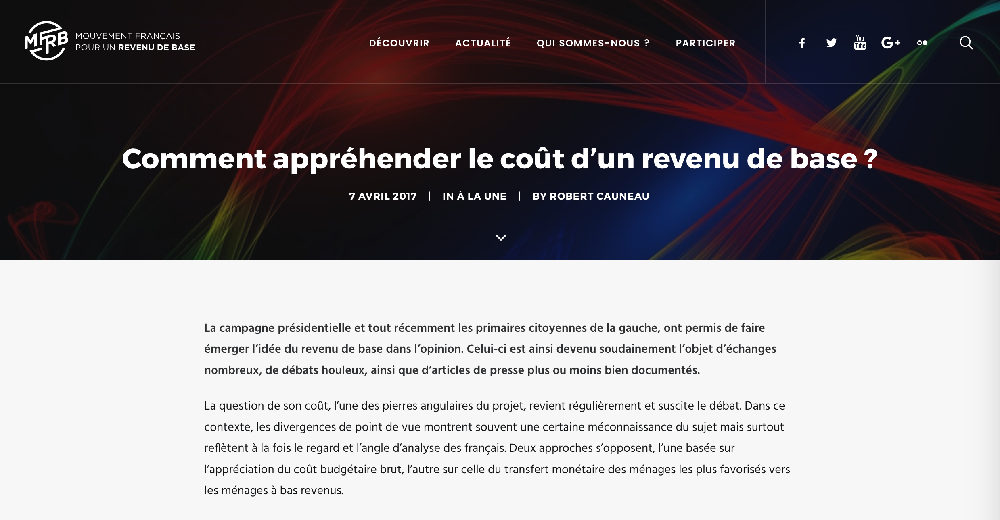

Assess company taxes
Model any kind of entity and evaluate their eligibility to fiscal obligations and benefits.
 Embauche application calculates hiring costs.
Embauche application calculates hiring costs.
From an individual situation, calculate any variable of a national tax and benefit system. Mes Aides example uses the OpenFisca Web API to calculate OpenFisca-France benefits.
Model any kind of entity and evaluate their eligibility to fiscal obligations and benefits.
Embauche application calculates hiring costs.
Compare law as it is now and as it could be.  This publication (in french) of the French Movement for a Basic Income uses OpenFisca to evaluate a reform introducing a basic income in France.